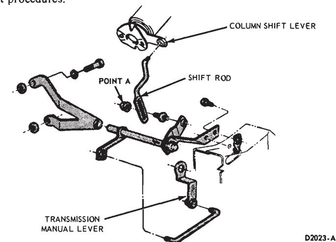
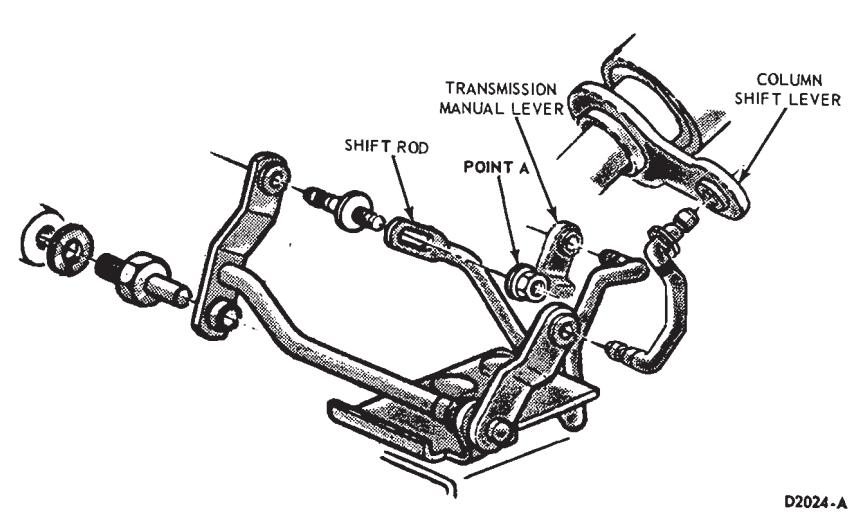
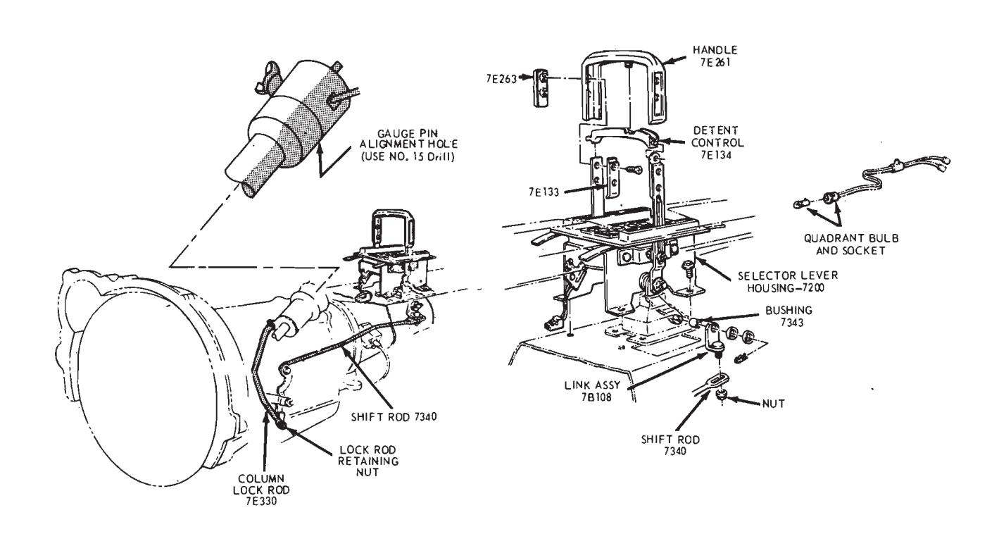
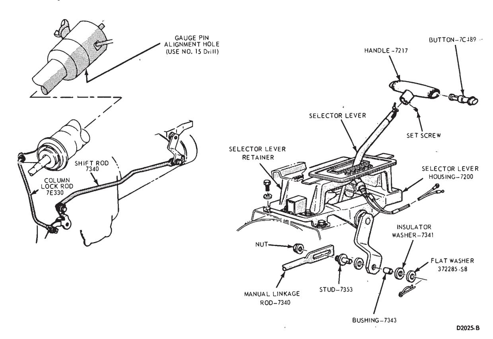
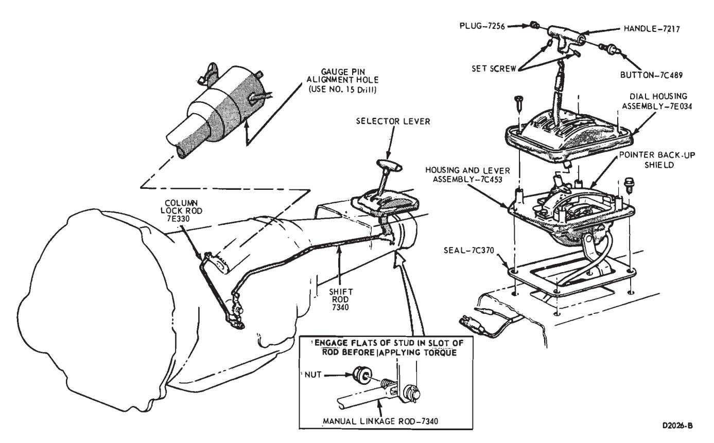
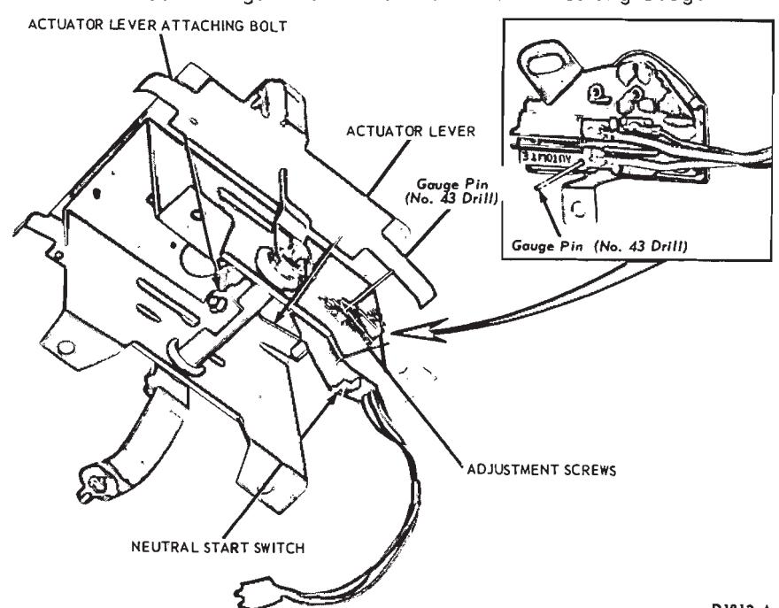
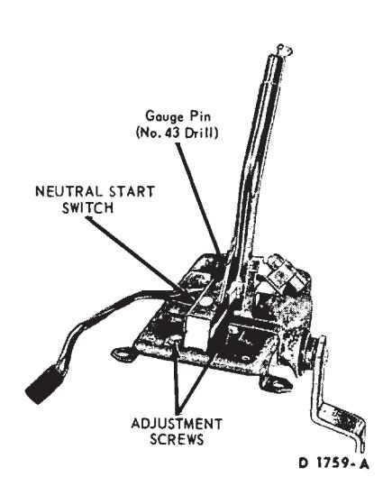
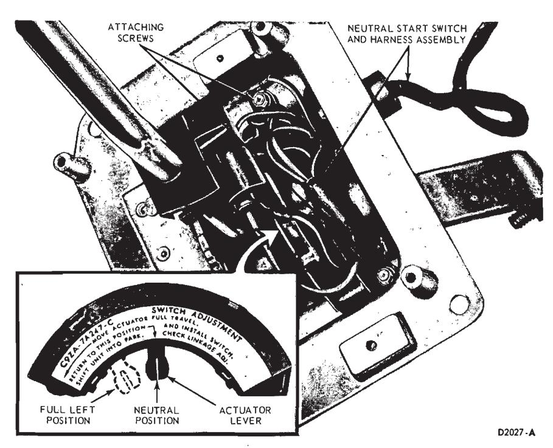
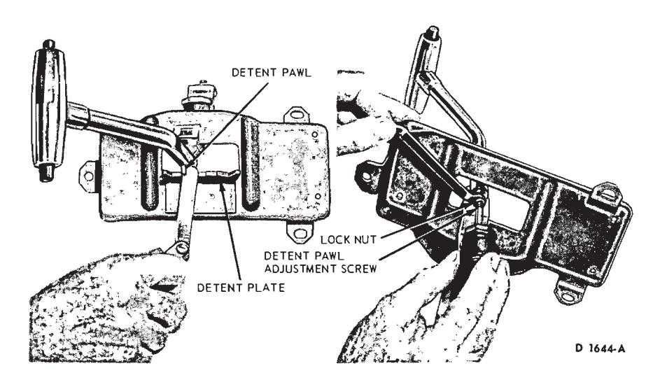

FMX Automatic Transmission · 17-03-30
Adjusting the throttle linkage is important to be certain the throttle and downshift systems are properly adjusted. The downshift system should come in when the accelerator is pressed through detent, and not before detent. Refer to Group 23 for detailed throttle and downshift linkage adjustment procedures.
Manual Linkage Adjustment
Column Shift
-
Place the selector lever in the D position tight against the stop.
-
Loosen the shift rod adjusting nut at point A (Fig. 4 or 5).
-
Shift the manual lever at the transmission into the D detent position, third from the rear.
-
Make sure that the selector lever has not moved from the D stop, then tighten the nut at point A to 10-20 ft-lbs.
-
Check the pointer alignment and the transmission operation for all selector lever detent positions.

Fig. 4 — Manual Linkage—Column Shift—Ford-Meteor
Fig. 5 — Manual Linkage—Column Shift—Fairlane-Montego
Console Shift
- Position the transmission selector lever in D position.
- Raise the vehicle and loosen the manual lever shift rod retaining nut (Fig. 6, 7 or 8). Move the transmission manual lever to the D position, third detent position from the back of the transmission.
- With the transmission selector lever and manual lever in the D positions, torque the attaching nut 10 to 20 ft-lbs.
- Check the operation of the transmission in each selector lever position.
Lock Rod Adjustment (Console or Floor Shift Vehicles Only)
Before attempting to adjust the lock rod, be sure that the transmission manual linkage is properly adjusted.
- Raise the vehicle and loosen the lock rod retaining nut (Fig. 6, 7 or 8).
- Lower the vehicle and place the selector lever in the D position tight against the D stop.
- Align the hole in the steering column socket casting with the column alignment mark and insert a 0.180 diameter gauge pin (No. 15 drill). The column casting must not rotate with the gauge pin in position.
- Raise the vehicle and torque the lock rod retaining nut to 10-20 ft-lbs.
- Lower the vehicle. Remove the gauge pin and check the linkage for proper operation.
Neutral Start Switch Adjustment—Console Shift
Ford-Meteor
-
With the manual linkage properly adjusted, check the starter engagement circuit in all positions. The circuit must be open in all drive positions and closed only in park and neutral.
-
Remove the four screws and plates securing the selector lever handle to the lever. Remove the handle and detent control.
-
Remove two screws from the rear of the console top panel. Pull the panel back to unhook it from the front of the console and remove the panel.

Fig. 6 — Manual Linkage—Console or Floor Shift—Ford-Meteor
Fig. 7 — Manual Linkage—Console or Floor Shift—Fairlane-Montego
Fig. 8 — Manual Linkage—Console or Floor Shift—Mustang-Cougar
Fig. 9 — Neutral Start Switch Adjustments—Console Shift—Ford-Meteor -
Loosen the two combination starter neutral and back-up light switch attaching screws (Fig. 9).
-
Move the selector lever back and forth until the gauge pin (No. 43 drill) can be fully inserted into the gauge pin holes (Fig. 9).
-
Place the transmission selector lever firmly against the stop of the neutral detent position.
-
Slide the combination starter neutral and back-up light switch forward or rearward as required, until the switch lever contacts the selector lever actuator. If an adjustment can not be made by rotating the switch, loosen the actuator lever attaching bolt and adjust the lever (Fig. 9).
-
Tighten the neutral start switch attaching screws. If the actuator lever was adjusted, tighten the actuator lever bolt to 6-10 ft-lbs.
-
Turn the ignition key to the ACC position and place the selector lever in the reverse position and check the operation of the back-up lights. Turn the key off.
-
Place the console top panel on the console and install the retaining screws.
-
Position the selector lever detent control and handle on the selector lever and secure with the four plates and attaching screws.
Fairlane-Montego
-
With the manual linkage properly adjusted, check the starter engagement circuit in all positions. The circuit must be open in all drive positions and closed only in park and neutral.
-
Remove the selector lever handle from the lever.
-
Remove the trim panel from the top of the console.

Fig. 10 — Neutral Start Switch—Console Shift—Fairlane-Montego -
Remove the cover and dial indicator as an assembly.
-
Remove the four screws that secure the selector lever retainer to the selector lever housing. Lift the retainer from the housing.
-
Loosen the two combination starter neutral and back-up light switch attaching screws (Fig. 10).
-
Move the selector lever back and forth until the gauge pin (No. 43 drill) can be fully inserted into the gauge pin holes (Fig. 10).
-
Place the transmission selector lever firmly against the stop of the neutral detent position.
-
Slide the combination starter neutral and back-up light switch forward or rearward as required, until the switch actuating lever contacts the selector lever.
-
Tighten the switch attaching screws and remove the gauge pin. Check for starting in the park position.
-
Turn the ignition key to the ACC position and place the selector lever in the reverse position and check the operation of the back-up lights. Turn the key off.
-
Position the selector lever retainer to the selector lever housing. Install the four attaching screws.
-
Install the cover and dial indicator.
-
Install the trim panel on the top of the console. Install the selector lever handle.
Mustang-Cougar
-
With the manual linkage properly adjusted and the engine turned off, place the selector lever in the N (Neutral) position. Then, shift the selector lever from neutral to 1, to P (park) and back to neutral. Shifting the selector lever through this shift pattern should adjust the switch automatically. If not, adjust it manually as follows:

Fig. 11 — Neutral Start Switch—Console Shift—Mustang-Cougar -
With the selector lever in neutral, remove the selector lever handle attaching screw and remove the handle (Fig. 8).
-
Remove the dial housing attaching screws and remove the housing.
-
Remove the two pointer back-up shield attaching screws and remove the shield.
-
Remove the two screws securing the neutral start switch to the selector lever housing.
-
Lift the switch from the housing and move the actuator lever all the way to the left. Then, return the actuator lever to the neutral position as shown in Figure 11.
-
Position the neutral switch assembly to the selector lever housing, and secure with the two attaching screws.
-
Place the selector lever in the P (Park) position and check the operation of the switch. The engine should start with the selector lever in the park position. If the engine does not start, replace the switch. Refer to the Neutral Start Switch Replacement procedures in this section.
-
Install the pointer back-up shield on the housing and lever assembly.
-
Install the dial housing on the selector lever housing assembly.
-
Install the selector lever handle.
Neutral Start Switch Removal and Installation—Console Shift
Ford-Meteor
- Remove the four screws and plates securing the selector lever handle to the lever. Remove the handle and detent control.
- Remove the two screws from the rear of the console top panel. Pull the panel back to unhook it from the front of the console and remove the panel.
- Remove the two screws securing the dial indicator assembly to the selector lever housing and remove the indicator assembly.
- Disconnect the neutral start switch wires at the plug connector. Remove the wires from under the retaining clip.
- Remove the two screws securing the neutral start switch to the selector lever housing and remove the switch (Fig. 9).
- Position the neutral start switch to the selector lever housing and install the two attaching screws.
- Adjust the neutral start switch as outlined under the Neutral Start Switch Adjustment procedures in this section.
- Connect the neutral start switch wires to the plug connector. Position the wires in the retaining clip and close the clip.
- Place the console top panel on the console and install the retaining screws.
- Position the selector lever detent control and handle on the selector lever and secure with the four plates and attaching screws.
Fairlane-Montego
- Remove the selector lever handle from the lever.
- Remove the trim panel from the top of the console.
- Remove the cover and dial indicator as an assembly.
- Remove the four screws that secure the selector lever retainer to the selector lever housing. Lift the retainer from the housing.
- Remove the two screws securing the neutral start switch to the selector lever housing. Disconnect the neutral start switch wires at the plug connector and remove the switch.
- Position the neutral start switch to the selector lever housing and install the two attaching screws.
- With the selector lever in neutral, move the selector lever back and forth until the gauge pin (No. 43 drill) can be fully inserted into the gauge pin holes (Fig. 10).
- Place the transmission selector lever firmly against the stop of the neutral detent position.
- Slide the combination starter neutral and back-up light switch forward or rearward as required, until the switch actuating lever contacts the selector lever.
- Tighten the switch attaching screws and remove the gauge pin.
- Connect the neutral start switch wires to the plug connector and check for starting in the park position.
- Position the selector lever retainer to the selector lever housing. Install the attaching screws.
- Install the cover and dial indicator.
- Install the trim panel on the top of the console. Install the selector lever handle.
Mustang-Cougar
- Place the transmission selector lever in the N (Neutral) position.
- Raise the vehicle and remove the manual lever control rod attaching nut (Fig. 8).
- Lower the vehicle and remove the selector lever handle attaching screw and the handle.
- Remove the dial housing attaching screws and the housing.
- Disconnect the dial indicator.
- Disconnect the neutral start switch and dial indicator light wires from their connectors at the dash panel.
- Remove the four selector housing and lever assembly attaching bolts. Remove the selector lever and housing assembly.
- Remove the two pointer back-up shield attaching screws and remove the shield.
- Remove the two screws securing the neutral start switch to the selector lever housing. Push the neutral start switch harness plug inward and remove the switch and harness assembly (Fig. 11).
- Before installing the new switch, hold it with the wires facing downward and move the actuator lever all the way to the left. Then, return the actuator lever to the neutral position as shown in Figure 11.
- Position the harness and neutral switch assembly in the selector lever housing. Secure with the two attaching screws.
- Install the pointer back-up shield on the housing and lever assembly.
- Position the selector lever and housing assembly on the console and install the attaching bolts.
- Connect the dial indicator light.
- Connect the neutral start switch and dial indicator light wires to their respective connectors at the dash panel.
- Install the dial housing on the selector lever housing assembly.
- Install the selector lever handle.
- Raise the vehicle and secure the manual lever control rod to the selector lever arm.
- Lower the vehicle.
- Place the selector lever in the park position and check the operation of the switch.
Selector Lever—Removal and Installation—Console Shift
Ford-Meteor
- Raise the vehicle and disconnect the link assembly from the selector lever arm (Fig. 6).
- Lower the vehicle. Remove the four screws and plates securing the selector lever handle to the lever. Remove the handle and detent control.
- Remove the two screws from the rear of the console top panel. Pull the panel back to unhook it from the front of the console and remove the panel.
- Disconnect the neutral start switch wires at the plug connector. Disconnect the bulb socket from the quadrant.
- Remove the four bolts that attach the selector lever housing to the floor pan and remove the selector lever and housing.
- Position the new selector lever and housing assembly on the floor pan and install the attaching bolts.
- Connect the bulb socket to the quadrant and the neutral start switch wires to the plug connector.
- Raise the vehicle and secure the link assembly to the selector lever arm with the bushing, insulator, flat washer and cotter pin (Fig. 6). Lower the vehicle.
- Place the console top panel on the console and install the retaining screws.
- Position the selector lever detent control and handle on the selector lever and secure with the four plates and attaching screws.
Fairlane-Montego
-
Raise the vehicle on a hoist or jack stands.
-
Remove the retainer that secures the manual linkage rod to the lower end of the manual lever (Fig. 7).
-
Remove the flat washer and two insulator washers and disconnect the rod from the arm.
-
Working from inside of the vehicle, remove the selector lever handle attaching screw. Lift the handle off the selector lever.
-
Remove the console trim panel from the top of the console. Remove the console retaining screws and remove the console.
-
Remove the cover and dial indicator as an assembly.
-
Remove the four screws that secure the selector lever retainer to the selector lever housing. Lift the retainer from the housing.
-
Disconnect the neutral start switch wires at the plug connector. Disconnect the bulb socket from the selector lever housing.
-
Remove the three bolts that secure the selector lever control housing to the console. Lift the selector lever housing from the console.
-
Remove the selector lever to housing attaching nut. Remove the lever from the housing.

Fig. 12 — Typical Selector Lever Detent Pawl Adjustment -
Install the selector lever in the housing and install the attaching nut. Torque the nut to 20 to 25 ft-lbs.
-
Install the selector lever handle.
-
Position the selector lever as shown in Figure 12. With a feeler gauge, check the clearance between the detent pawl and plate. The clearance should be 0.005 to 0.010 inch. If necessary adjust the height of the detent pawl as shown in Figure 12.
-
Remove the handle from the selector lever.
-
Position the selector lever housing in the console and install the three attaching bolts. Do not tighten the attaching bolts at this time.
-
Connect the bulb socket to the selector lever housing and the neutral start switch wires to the plug connector.
-
Position the selector lever retainer to the selector lever housing. Install the four attaching screws.
-
Install the cover and dial indicator.
-
Place the console in position and install the retaining bolts. Tighten the selector lever housing attaching bolts.
-
Position the console trim panel and secure it with the attaching screws.
-
Install the handle and the button on the selector lever. Secure the handle with the set screw.
-
Secure the manual linkage rod to the arm with two insulating washers, a flat washer and a retainer (Fig. 7).
-
Adjust the linkage as required. Lower the vehicle.
Mustang-Cougar
- Raise the vehicle and remove the manual lever control rod attaching nut (Fig. 8).
- Lower the vehicle, remove the selector lever handle attaching screw.
- Remove the dial housing attaching screws and the housing.
- Remove the pointer back-up shield attaching screws and the shield.
- Disconnect the dial indicator light.
- Disconnect the neutral start switch and dial indicator light wires from their connectors at the dash panel.
- Remove the selector housing and lever assembly attaching bolts. Remove the selector lever and housing.
- Remove the selector lever to housing attaching nut. Remove the lever from the housing.
- Install the selector lever in the housing and install the attaching nut. Torque the nut to 20 to 25 ft-lbs.
- Install the selector lever handle.
- Position the selector lever as shown in Figure 12. With a feeler gauge check the clearance between the detent pawl and plate. The clearance should be 0.005 to 0.010 inch. If necessary, adjust the height of the detent pawl as shown in Figure 12.
- Remove the handle from the selector lever.
- Install the selector housing and lever assembly as shown in Figure 8. Torque the attaching bolts 4-6 ft-lbs.
- Connect the dial indicator light.
- Connect the neutral start switch and dial indicator light wires to their respective connectors at the dash panel.
- Install the pointer back-up shield and tighten the attaching screws.
- Install the selector lever handle and tighten the attaching screw.
- Position the selector lever in the D position.
- Raise the vehicle. Install the transmission manual lever rod to the selector lever. Adjust the manual linkage.
- Lower the vehicle and check the transmission operation in each selector lever detent position.